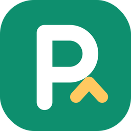
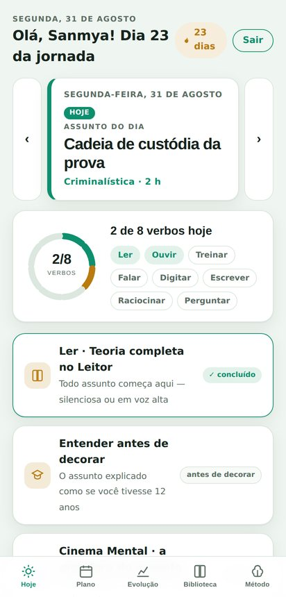
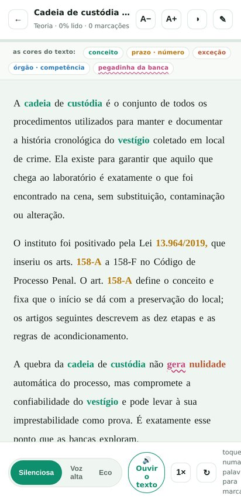
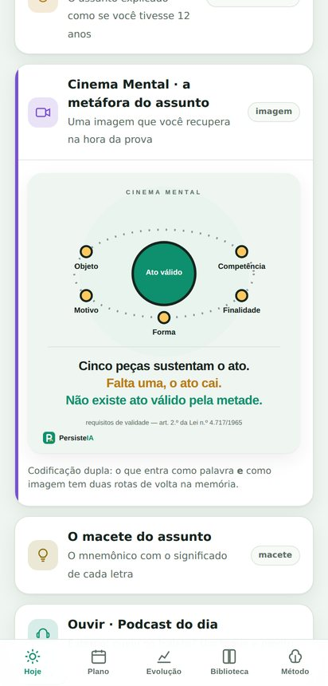
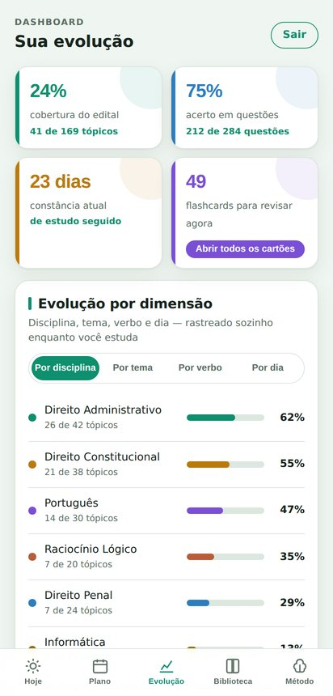
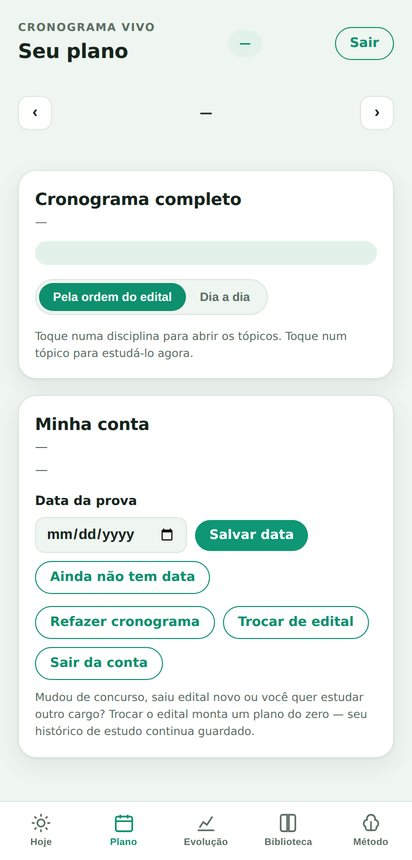

PersisteIAAprovação não é sorte.
É método.
Você envia o edital do seu concurso. A PersisteIA mede o tamanho real de cada assunto, monta o cronograma até a data da prova e escreve o material de estudo de cada dia — teoria, lei seca, questões, áudio, imagem e revisão. Você abre o app e estuda. O esforço continua sendo seu; a organização, não.
“Ninguém é aprovado porque estudou mais. É aprovado porque estudou do jeito que o cérebro aprende — e sustentou isso todo dia.”
Manifesto PersisteIAEstas são as telas de verdade
Sem maquete e sem promessa: é o que você vê ao entrar, no dia seguinte a enviar o seu edital.

HojeO assunto do dia em destaque, o anel dos oito verbos e as setas para andar pelo cronograma.
LeitorA teoria em tela limpa, com as palavras-chave coloridas por tipo — conceito, prazo, exceção, pegadinha — marca-texto, caneta e leitura em voz alta.
Cinema MentalA metáfora visual do assunto, desenhada para você recuperar a imagem na hora da prova.
EvoluçãoCobertura do edital, acerto em questões, constância e desempenho por disciplina, tema, verbo e dia.
PlanoO cronograma inteiro, pela ordem do edital ou dia a dia, com o assunto de cada data a um toque de distância.No celular, arraste para o lado para ver as outras telas.
Por que candidatos capacitados continuam reprovando?
Não é falta de esforço. São seis armadilhas que o método certo desarma.
O edital não é democrático: uma minoria dos tópicos responde pela maioria das questões. Sem esse mapa, o mesmo tempo vai para o que cai sempre e para o que quase nunca cai.Princípio de Pareto aplicado ao edital.
Cada examinador tem manias: o tipo de pegadinha, o recorte preferido, o jeito de escrever a assertiva. Quem estuda só a teoria chega sem reconhecer o padrão.Engenharia reversa a partir do histórico de provas.
Reler o resumo dá a sensação boa de domínio — e é justamente ela que engana. Você reconhece o texto; não consegue produzi-lo na hora da prova.Efeito de Fluência: familiaridade confundida com aprendizado.
Sem revisão programada, boa parte do que se estuda hoje evapora em poucos dias. O candidato refaz o mesmo caminho várias vezes e chama isso de revisar.Curva do Esquecimento — Ebbinghaus, 1885.
Só ler é usar uma fração da capacidade de memória. Ouvir, falar, escrever à mão e visualizar criam rotas diferentes para o mesmo conteúdo — e cada rota é uma chance a mais de lembrar.Codificação Dupla — Paivio.
Cronograma que não se adapta vira dívida. Duas semanas atrasado, o candidato desiste do plano — e, pouco depois, do concurso.Teoria da Autodeterminação — Deci & Ryan.
Do PDF do edital ao primeiro dia de estudo
Quatro passos, uma vez só. Depois é abrir e estudar.
O PDF que você baixou do site oficial. O sistema separa disciplinas e tópicos e estima o peso real de cada um.
Quantas horas por dia, quais dias da semana e quando é a prova. É a única configuração que existe.
O plano diário aparece pronto, com cada tópico dimensionado pelo peso e distribuído até a data da prova.
Abra o dia de hoje e siga os oito verbos. O conteúdo é escrito para aquele tópico, no tamanho que ele merece.
O mesmo assunto, por oito portas diferentes
Ler e reler é o jeito mais lento de aprender. Cada tópico do seu edital vira oito experiências com o mesmo conteúdo — e cada uma tem a sua cor no sistema inteiro.
Tudo o que a PersisteIA faz por você
Não é um app de cronograma nem um banco de questões. É o material inteiro, escrito para o seu edital, e as ferramentas para estudá-lo.
Planejamento
- Leitura do edital em PDF com disciplinas e tópicos separados automaticamente
- Peso real por tópico — assunto grande ocupa mais dias, assunto curto se junta a outro
- Divisão em partes: o que não cabe num dia vira parte 1, 2 e 3, cada uma continuando a anterior
- Cronograma até a data da prova, com projeção de quando você fecha 100% do edital
- Replanejamento automático quando você atrasa ou adianta
- Duas visões do plano: pela ordem do edital ou dia a dia
O material de cada assunto
- Aula escrita completa, do tamanho do tópico — até 1.800 palavras num assunto grande
- Lei seca transcrita: o texto integral do dispositivo, com a citação exata
- Explicação como se você tivesse 12 anos, traduzindo cada termo técnico
- Cinema Mental: a metáfora do assunto desenhada, para a memória visual
- Macete do assunto com o significado de cada letra à mostra
- Mapa mental do conceito central e seus ramos
- Resumo visual para salvar, imprimir e revisar
Som e imagem
- Podcast do assunto com duas vozes de estúdio e pausas de recuperação
- Transcrição do episódio para acompanhar lendo enquanto ouve
- Música mnemônica com refrão e estrofes cobrindo os pontos principais
- Vídeo do assunto, narrado, para assistir e revisar
- Leitura em voz do aparelho em qualquer texto, com controle de velocidade
- Karaokê da leitura: o marcador acompanha a palavra falada
Praticar e fixar
- Questões inéditas no estilo da sua prova, Certo/Errado ou múltipla escolha
- Comentário item a item, explicando por que cada alternativa cai
- Flashcards com repetição espaçada: o que você erra volta amanhã, o que acerta volta em um mês
- Baralho completo com busca, filtro e todas as respostas de uma vez
- Trecho-chave de memória para completar digitando
- Explicação em voz alta no estilo Feynman, com os pontos esperados
Ferramentas de estudo
- Marca-texto em quatro cores, arrastando o dedo ou selecionando como no Kindle
- Caneta, círculo e seta para desenhar por cima do texto — tudo salvo por assunto
- Palavras-chave coloridas por tipo: conceito, prazo, exceção, órgão e pegadinha
- Teleprompter que acompanha a sua leitura em voz alta
- Minha Voz: suas gravações guardadas para reouvir no trajeto
- Biblioteca com tudo o que já foi criado para você
Acompanhamento e apoio
- Persi, o tira-dúvidas, que responde no assunto e cita a fonte
- Pergunta por voz: você fala, ele transcreve e responde
- Painel de evolução por disciplina, tema, verbo e dia
- Constância e cobertura do edital acompanhadas sozinhas
- Canal de sugestões com print, respondido pela própria desenvolvedora
- WhatsApp direto para dúvidas sobre o sistema
Fundamentos científicos
Cada recurso existe porque há evidência de que ele funciona — não porque ficou bonito na tela.
- Curva do Esquecimento aplicada ao calendário de revisões
- Repetição espaçada: o intervalo cresce conforme você acerta
- Prática de recuperação: lembrar sem olhar fixa mais do que reler
- Codificação dupla: palavra e imagem no mesmo tópico
- Efeito de produção: falar e escrever gravam mais do que ler
- Efeito Feynman: explicar com as próprias palavras expõe a lacuna
- Interleaving: alternar temas melhora a discriminação entre conceitos
- Escrita à mão como âncora motora da memória
- Sessões no limite real de atenção sustentada
- Multissensorialidade: áudio, texto, voz, imagem e escrita
- Carga cognitiva controlada: um tópico por vez, sem excesso de decisão
- Progresso visível como combustível de motivação
- Engenharia reversa do estilo da prova a partir do histórico
- Pareto do edital: prioridade para o que concentra pontuação
- Simulados no formato real, com comentário por assertiva
- Diagnóstico por disciplina, tema e verbo para corrigir a rota
A PersisteIA organiza, ensina e sustenta o estudo — ela não aprova ninguém. Não existe fórmula, atalho nem garantia: o esforço continua sendo seu.
“Mas dá para confiar em conteúdo feito por IA?”
A pergunta é boa e a resposta honesta não é “sim, confie”. É: não precise confiar — confira. A PersisteIA foi construída para que checar seja mais rápido do que duvidar.
Cada dispositivo transcrito traz o link do texto oficial — Planalto para leis e Constituição, o site do próprio tribunal para súmulas. O endereço é montado por tabela, não pela IA. Um toque e você está lendo a fonte.
Quando não há endereço exato, o link vai para a busca oficial do LexML, do Senado Federal.Depois de pronta, a lei seca passa por uma segunda leitura independente, que recebe só as transcrições — sem ver a aula — e responde se a citação existe e se a redação bate. O que passa aparece marcado como conferido; o que não passa aparece marcado como a conferir, com o motivo à vista.
Nada é apagado em silêncio: o aluno vê o alerta e decide.O gerador é instruído a não transcrever nada de que não tenha certeza literal: melhor devolver a lei seca vazia do que apresentar paráfrase como se fosse texto de lei. Números, prazos e quóruns seguem a mesma regra.
Toda questão vem com comentário e fundamento — você discorda com a lei na mão.Dentro do app há um canal direto com a desenvolvedora, com anexo de print, e a resposta volta na mesma tela. Assunto com problema é refeito — e o botão “Gerar de novo” reescreve o conteúdo na hora, sem esperar ninguém.
Que a IA nunca erra, ninguém pode prometer — nem a IA, nem a apostila, nem o cursinho. A PersisteIA não substitui a lei, a jurisprudência atualizada nem o edital: ela organiza, explica e treina, deixando a fonte sempre a um toque de distância.
O material é declaradamente gerado por IA e está escrito assim dentro do app, na tela do Método. Nada de fingir que veio de uma equipe de professores. Transparência é o que permite estudar com a régua certa.
Quanto custa
Menos que uma apostila por mês — e sem cartão de crédito, se você não tiver. Sempre com 7 dias grátis antes de qualquer cobrança.
Plano mensal
- 7 dias grátis, sem pedir cartão
- Edital inteiro mapeado e cronometrado
- Todo o material de estudo, sem limite de assuntos
- Os oito verbos em todos os tópicos
- Podcast, música, vídeo, mapa mental e Cinema Mental
- Flashcards, simulados e Persi tira-dúvidas ilimitado
- Painel de evolução e suporte no WhatsApp
No 8.º dia você decide se continua. Nada é cobrado antes disso.
Não tem cartão de crédito, ou prefere não deixar cobrança automática rodando? Compre um período fechado por Pix, boleto ou cartão. Quanto mais longo, mais barato o mês — e não há renovação nem nada para cancelar depois.
O período comprado soma ao que você já tem: quem paga adiantado nunca perde dias. Escolha o seu dentro do aplicativo, depois dos 7 dias grátis.
Quem somos
Duas servidoras públicas do Amazonas que viram de perto o que trava o candidato — e resolveram construir o sistema que gostariam de ter tido.
Aprovada em três concursos públicos — SUFRAMA, Polícia Civil do Amazonas e Corpo de Bombeiros Militar do Amazonas. Foi odontóloga efetiva da SUFRAMA e pediu exoneração para assumir o cargo no Corpo de Bombeiros Militar, onde é Capitão-Dentista; hoje é Perita Odontolegista da Polícia Civil do Amazonas e dirige a Polícia Científica do Estado. São mais de quinze anos de serviço público. Apaixonada por desburocratizar o Estado, une gestão enxuta, tecnologia e neurociência aplicada à aprendizagem: é dela o método por trás da Esteira dos oito verbos — e é ela quem desenvolve o sistema.
- Aprovada em 3 concursos: SUFRAMA, PC-AM e CBM-AM
- Master Black Belt em Lean Six Sigma
- MBA em Metodologias Ágeis
- Especialização em Inteligência e Inovação Aplicadas ao Enfrentamento ao Crime Organizado — UFSC

Bacharel em Serviço Social e servidora do Departamento de Polícia Técnico-Científica do Amazonas, onde atua na elaboração e execução de planos e programas institucionais com interface em Criminalística e Medicina Legal. Traz para a PersisteIA o olhar de quem organiza processos complexos para pessoas reais: cuida para que cada detalhe do sistema respeite o tempo de quem estuda — menos cliques, menos burocracia, mais estudo de verdade.
- Bacharelado em Serviço Social — UNINORTE Laureate (2019)
- Pós-graduação em Saúde e Segurança do Trabalho — UEA
- Planejamento institucional no DPTC/AM
Seus dados
Transparência sobre o que guardamos e por quê.
A PersisteIA trata seus dados pessoais em conformidade com a Lei Geral de Proteção de Dados (Lei n.º 13.709/2018). Coletamos apenas o necessário para o serviço funcionar: seu nome e e-mail para manter a conta, o edital que você envia para gerar o cronograma e o registro do seu progresso de estudo para calcular revisões e desempenho.
Seus dados não são vendidos, alugados nem compartilhados com terceiros para fins publicitários. O conteúdo do seu edital é usado exclusivamente para produzir o seu plano e o seu material de estudo. Suas gravações de voz ficam guardadas no seu próprio aparelho. Você pode, a qualquer momento, solicitar acesso, correção ou exclusão dos seus dados — inclusive o encerramento definitivo da conta.
Dúvidas, pedidos ou exercício de direitos: persisteiamentoria@outlook.com.
Persistir é o método
O nome não é enfeite: o que sobra no fim é de quem manteve a constância. O sistema existe para tornar a constância fácil.
Criada com propósito e com determinação por Sanmya Tiradentes & Jane De Maria
persisteiamentoria@outlook.com WhatsApp (92) 99152-1031 Instagram @persisteia
persisteia.com.br · feito no Amazonas para concurseiros do Brasil inteiro.
Seus 7 dias de teste terminaram
Seu edital, seu cronograma e todo o seu progresso continuam guardados. Assine para seguir de onde parou.
- Tudo o que você já usou nestes 7 dias
- Sem fidelidade — cancele quando quiser
- Cartão de crédito, pelo Mercado Pago — a assinatura mensal só roda em cartão
Escolha um período e pague por Pix, boleto, cartão à vista ou parcelado. Não renova sozinho e não tem nada para cancelar: o acesso vale até a data que você comprou.
Envie seu edital.
O resto é com a gente.
A PersisteIA transforma qualquer edital em um plano diário que faz você ouvir, ler, falar, digitar, escrever, raciocinar, treinar e perguntar — até a aprovação.
Passo 1 de 2
Envie o edital do seu concurso
Mande o PDF inteiro que a IA lê para você — ou cole só a parte do conteúdo programático. Em seguida eu monto seu plano.
ou
- Lendo o conteúdo programático
- Mapeando disciplinas e tópicos
- Priorizando por peso e incidência
- Preparando a esteira dos 8 verbos
Edital mapeado
Seu edital
mapeado com sucesso
Seu plano replaneja sozinho toda noite. Nenhuma planilha, nenhuma decisão difícil: é só abrir e estudar.
Passo 2 de 2 · seu ritmo
Quanto tempo você tem por dia?
Quantos dias por semana?
—
Olá!
Princípios da Administração Pública
—
O essencial do assunto de hoje:
Leitura silenciosa ou em voz alta com teleprompter — a teoria vem antes da prática.
Explicando como se você tivesse 12 anos
Assim que a teoria carregar, a explicação simples aparece aqui.
As cenas do assunto aparecem aqui.
Codificação dupla: o que entra como palavra e como imagem tem duas rotas de volta na memória.
O mnemônico deste assunto aparece aqui.
Episódio com as vozes de estúdio da Ana e do Léo. O primeiro play de cada assunto grava o áudio; depois ele abre na hora.
Transcrição do episódio
A transcrição aparece assim que o episódio for gerado.
Explique em voz alta: por que o concurso público concretiza a impessoalidade?
Toque no microfone e explique em voz alta
Pode falar. O que você disser aparece aqui.
Sem pressa: só para quando você tocar no botão.
"A administração pública direta e indireta de qualquer dos Poderes […] obedecerá aos princípios de , , , e …"
Digitar de memória usa o efeito de geração: fixa mais do que reler dez vezes.
Escrever à mão engaja áreas motoras que reforçam a memória — capriche no traço.
Questão 1 · estilo certo/errado
O princípio da publicidade impede, em qualquer hipótese, a restrição de acesso a informações produzidas pela Administração Pública.
Quanto você confia na sua resposta? 70%
O vídeo passa os slides na voz do seu aparelho. Se a voz de estúdio deste assunto já existir, dá para gravar e salvar o vídeo no celular.
PersisteIA Estúdio · Direito Administrativo
A letra é recitada pela voz de estúdio, no ritmo do estilo sugerido — ainda sem instrumental. O primeiro play grava o áudio do assunto.
I de Impessoal, não é pra se promover
M de Moralidade, é honesto o meu agir
P de Publicidade, todo mundo pode ver
e o E de Eficiência veio pra modernizar…
LIMPE, LIMPE — no caput do 37! ♪
Perguntar é aprender duas vezes: formular a própria dúvida expõe lacunas que você não sabia que tinha. Pergunte qualquer coisa do assunto — o Persi responde com a fonte citada, e a dúvida vira flashcard.
As perguntas feitas no chat contam sozinhas para este verbo.
Terminou o assunto de hoje?
Retome a teoria quando quiser. Quando marcar como concluído, eu puxo o próximo assunto do cronograma.
Algo neste assunto saiu errado?
Ao entrar no dia, o sistema escreve de uma vez o pacote inteiro deste assunto: teoria, lei seca, explicação simples, mnemônico, podcast, música, mapa, Cinema Mental, questões e flashcards. Refazer reescreve tudo isso — não só a teoria. Seu progresso e suas marcações no texto continuam.
Revisões no ponto certo de hoje
Minha Voz · suas gravações
Toda leitura em voz alta que você grava no Leitor fica aqui, no seu aparelho, pronta para reouvir no trajeto.
Nenhuma gravação ainda. Leia a teoria em voz alta no Leitor e sua faixa aparece aqui.
Ouvir a matéria na própria voz é um dos reforços de memória mais fortes que existem.
A ordem é sugestão: adiante o que quiser ou deixe para depois — eu recalculo e nada se perde. O que você faz aqui dentro eu marco sozinho; só o que é externo (ouvir fora do app, escrever no caderno) pede um toque seu no "Feito".
Cronograma vivo
Seu plano
Cronograma completo
—
Toque numa disciplina para abrir os tópicos. Toque num tópico para estudá-lo agora.
Minha conta
—
—
Data da prova
Assinatura
—
Mudou de concurso, saiu edital novo ou você quer estudar outro cargo? Trocar o edital monta um plano do zero — seu histórico de estudo continua guardado.
Dashboard
Sua evolução
Evolução por dimensão
Disciplina, tema, verbo e dia — rastreado sozinho enquanto você estuda
Cada disciplina mantém sua cor em todo o app. Toque em uma para abrir os temas.
Cada dia do seu cronograma, com o assunto agendado e os oito verbos: o quadradinho aceso é o verbo que você usou naquele dia. Toque no assunto para abrir a esteira dele.
Ordem dos quadradinhos: Ler · Ouvir · Falar · Digitar · Escrever · Raciocinar · Treinar · Perguntar.
Escrever é seu verbo mais atrasado — 4 atividades externas aguardam o seu "Feito". Se já fez no caderno, confirme; se não, o plano de amanhã reserva 10 min.
Acerto semanal
Percentual de acertos em questões · últimas 8 semanas
Constância
Últimos 60 dias · quanto mais escuro, mais verbos concluídos
Por trás do app
A Esteira de Aprendizado Ativo
Cada assunto do edital passa por oito verbos. Não é variedade por variedade: cada verbo aciona um efeito comprovado pela ciência da aprendizagem.
O mesmo conteúdo entra pelo canal auditivo em momentos mortos do dia (trajeto, fila), criando uma segunda via de memória.
Resumos enxutos com o que a banca de fato cobra. Reler pouco: a leitura aqui prepara a recuperação, não a substitui.
Explicar em voz alta expõe lacunas invisíveis. A IA transcreve e devolve o que você omitiu.
Completar de memória o trecho-chave — lei, definição ou regra central — fixa mais do que qualquer releitura: o cérebro guarda o que produz.
Esquemas copiados à mão engajam circuitos motores e espaciais que a tela não alcança.
Questões no estilo exato da banca, com sua confiança declarada antes — para treinar também o seu "sei que sei".
Cada item volta no momento ótimo do seu esquecimento, calculado individualmente. Revisar cedo desperdiça; tarde, perde.
Formular as próprias perguntas e caçar as respostas é aprender duas vezes: expõe lacunas que você não sabia que tinha. O Persi responde com a fonte citada, e toda dúvida vira flashcard.
A ideia de que cada pessoa aprende só no "seu estilo" não tem respaldo científico. O que a evidência mostra é o contrário: todo cérebro aprende mais quando o conteúdo entra por várias portas. Por isso, aqui ninguém escolhe um estilo — todo mundo passa pelos oito verbos.
A maior causa de reprovação não é técnica: é desistência. A PersisteIA replaneja quando você falha, protege sua constância e celebra cada marco da jornada — porque quem persiste, passa.
De onde vem este conteúdo
O material é escrito por inteligência artificial a partir do seu edital — e isso está dito com todas as letras, porque você merece saber com o que está estudando. IA erra: inventa um número, troca um artigo, repete uma redação que a lei já mudou. Em vez de prometer que isso nunca acontece, a PersisteIA faz o que dá para fazer de verdade — te dá os meios de conferir em um toque, e confere sozinha o que consegue conferir.
- Link da fonte oficial em cada dispositivo. A citação vira endereço no Planalto ou no site do tribunal — montado por tabela, não por IA. Se não dá para montar o endereço exato, o link vai para a busca oficial do LexML, do Senado.
- Segunda leitura independente. Quem escreve não é quem confere: outra passada recebe só as transcrições, sem ver a aula, e responde se a citação existe e se a redação bate. O que passa vem marcado como conferido; o que não passa vem marcado como a conferir, com o motivo — nunca some da tela sem você saber.
- Regra de silêncio na dúvida. O gerador é instruído a deixar a lei seca vazia quando não tem certeza da redação literal, em vez de apresentar paráfrase como se fosse texto de lei.
- Questão com comentário e fundamento. Toda alternativa vem explicada, e o Persi responde citando o dispositivo — assim você discorda dele com a lei na mão.
- Erro encontrado vira correção. O campo aqui embaixo chega direto na desenvolvedora, com print. Conteúdo errado é refeito, e o botão “Gerar de novo” no Leitor reescreve o assunto na hora.
O que não prometemos: que a IA nunca erre, nem que o material substitua a lei, a jurisprudência atualizada ou o edital. Trate a PersisteIA como um professor muito bem preparado e muito rápido — que você confere quando a informação for decisiva. Perto da prova, a redação vigente se confirma na fonte oficial, que está a um toque de cada dispositivo.
Sugestões e dúvidas
Achou um erro, sentiu falta de alguma coisa ou travou em algum ponto? Escreva aqui — chega direto na desenvolvedora, e a resposta aparece nesta mesma tela. Se quiser, anexe um print para eu ver exatamente o que você viu.
Os princípios do artigo 37 são o alicerce de toda a Administração Pública brasileira. O caput enumera cinco princípios expressos, que formam o acrônimo LIMPE: legalidade, impessoalidade, moralidade, publicidade e eficiência.
Pela legalidade, a Administração só pode fazer o que a lei autoriza, ao contrário do particular, que pode fazer tudo o que a lei não proíbe. A impessoalidade exige atuação voltada ao interesse público, vedando a promoção pessoal de autoridades, conforme o parágrafo primeiro.
A moralidade impõe honestidade e boa-fé como requisito de validade do ato, e dela o Supremo extraiu a vedação ao nepotismo. A publicidade faz da transparência a regra, ressalvado o sigilo imprescindível à segurança da sociedade e do Estado. A eficiência, incluída pela Emenda 19 de 1998, cobra resultados com economicidade.
Sua gravação ficou salva para você reouvir no trajeto, e a transcrição virou material de revisão. Você hesitou em "imprescindível" e "economicidade" — as duas viraram flashcards de amanhã.
Antes de sair: 30 segundos de memória
Recuperar agora o que você acabou de ler multiplica a retenção.
Carregando…
Tudo o que já foi criado para você
Biblioteca
—
🎙️ Minhas gravações
O áudio fica guardado no aparelho onde você gravou. As fichas abaixo aparecem em qualquer aparelho.
Painel da gestora
Alunos e assinaturas
Sugestões dos alunos 0
O que chega pelo campo de sugestões do app. Responda aqui e o aluno vê a resposta na tela dele.
Criar minha conta
Seu progresso fica salvo e sincronizado — é rapidinho.
Esqueci minha senha
Digite o e-mail da sua conta. Mando um link para você criar uma senha nova — seu edital e todo o seu progresso continuam guardados.
Criar uma senha nova
Escolha uma senha com pelo menos 6 caracteres. Assim que salvar, você já entra direto.